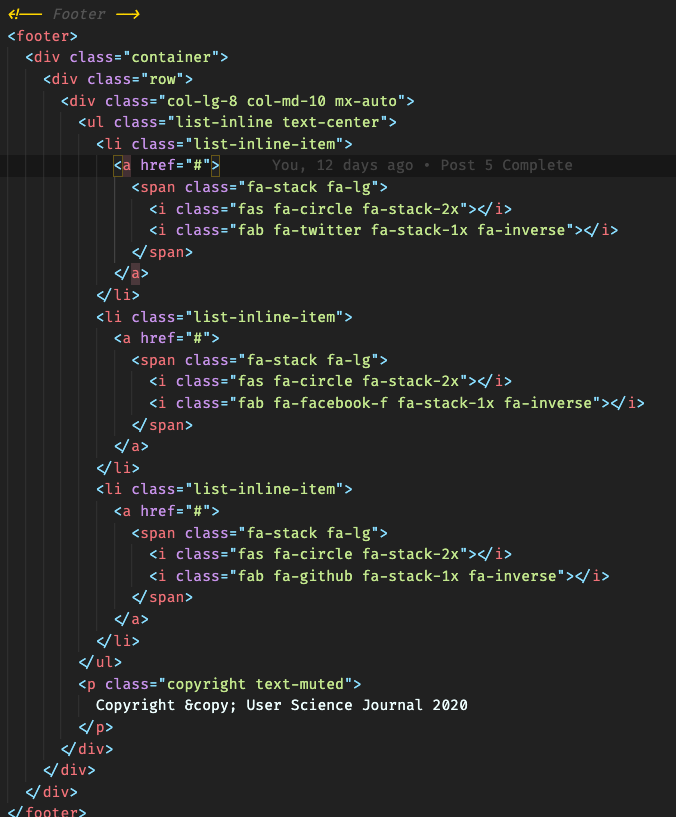
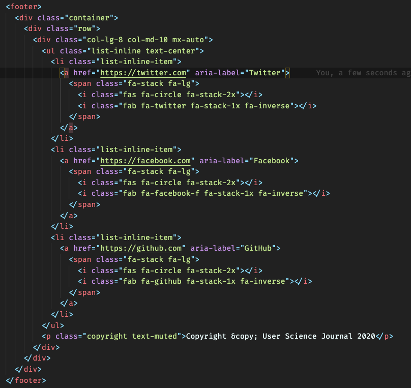
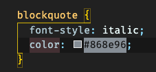
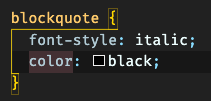
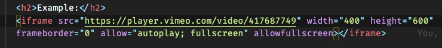
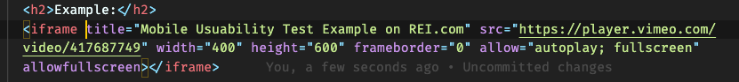

Summary of making post accessible
Initially, I was amazed by the results of Google's Lighthouse accessibility software results and the WAVE accessibility report. Overall, my website has scored over 90 and only suggesting a few errors. Showing that Bootstraps Templates initially already have much accessibility in mind.
The workflow that I used to analyze to check my User Science Journal for accessibility running the Lighthouse analyzer in the console of my website first. Check under the accessibility section for items that I need to work on and took note of those. Following the Lighthouse results, I took the URL and ran that through the Wave website.
WAVE gives the user a report similar to Lighthouse, but it helps dig into each part of the code in more detail. So, I took some a couple of those errors and decided to focus on three of them and see if we can correct them and get a high accessibility score overall.
The errors I focused on fixing for this article are:
- Links do not have a discernible name
- Correcting poor contrast ratios for p tags
- Add title to iframe
Links do not have a discernible name issue
This error is a bit confusing, because it is complaining about our a tags on our social icon links. We don't want any text here for it will take away from the cleanliness of the page. But, we can add an aria-label attribute and this will take care of this issue.
Code Before
Code After
Poor Contrast Ratio Issue
Found that simply overwriting the color for the blockquote css class to black did the trick.
Code Before
Code After
Missing title for iFrame Issue
The iFrame tag for the video on Post 4 was missing, simply just adding a title to the code. Making that piece of code just that much more to accessible.
Code Before
Code After
Challanges of making my site Accessible
The links do not have a discernible name error took a few minutes to Google, but I was able to figure that out fairly quickly. At first glance it just looks like a missing URL, but after re-testing post adding an URL, I was still receiving the same error. Once I discovered the aria-label attribute all was good.
Review of using a bootstrap template with accessibility in mind.
The bootstrap framework is a solid start in building a webpage. The accessibility concerns are minimal from my experience of using bootstrap templates. Example being my personal "Accessibility Evaluation" blog post, which I have not touched besides some text, links, and images already have an accessibility rating of 93 on Google's Lighthouse tool. Running through tools like a wave as well, before even touching the code as well, we can see that ARIA elements are present in the bootstrap template. Furthermore, the templates are already responsive to user's devices.